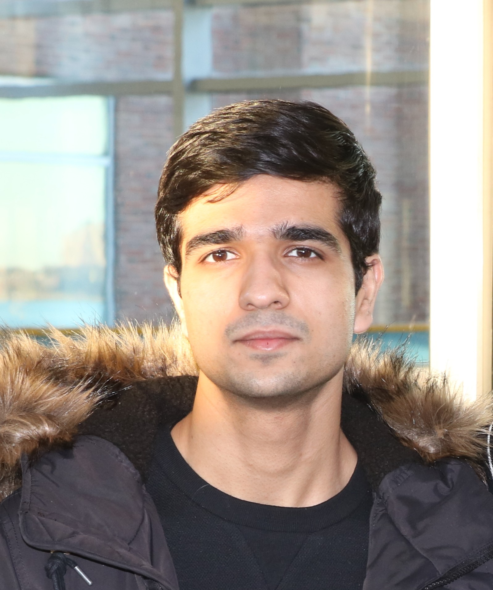

Rahman Ejaz
I am a PhD Candidate at the University of Rochester focusing on applied AI/ML for predictive modeling and automated design of laser-driven nuclear fusion experiments, advised by Varchas Gopalaswamy, Christopher Kanan and Riccardo Betti.
My work centers on extracting structure from noisy, high-dimensional data for DNN–based prediction, using generative AI and Bayesian optimization to identify promising experimental candidates, and developing decision-making algorithms for experimental design and control. The decision-making algorithms were deployed for optimizing in real-time laser-driven nuclear fusion experiments, which has implications for accelerating scientific discovery on the path for realizing laser-driven nuclear fusion as a commercial energy source.
My interests broadly span in the domain of reinforcement learning, and on advancements for neural architectures that enables AGI, which is loosly defined as an AI that can figure things out in order to achieve a goal.
I am on the job market for late 2026/early 2027 for machine learning research roles involving data-driven knowledge discovery, forcasting, automated decision-making, and real-world deployment.
Selected Publications
(A superscript * denotes equal contribution)
Talks
Extra
In my free time I build trading systems.